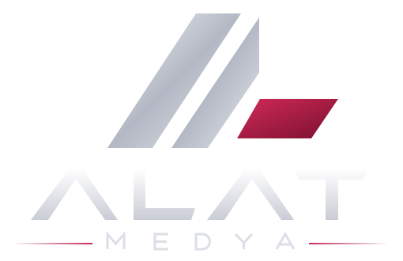

Net kapsam
Beklenen çıktı, sınırlar ve öncelikleri işe başlamadan birlikte yazılı olarak tarif ederiz.

ALAT Medya; kendi dijital ürünlerini geliştiren ve markalar için kimlik, arayüz, içerik ve yazılım üreten bağımsız bir ürün ve tasarım stüdyosudur.

Doğru çözüm, doğru sorularla başlar. İhtiyacı, kullanıcıyı ve mevcut kısıtları anlamadan gereksiz özellikler eklemeyiz. Net kapsamla başlar, ilerledikçe karar noktalarını görünür tutarız.
İşin niteliği kadar birlikte çalışma sürecinin berraklığını da önemsiyoruz.
Beklenen çıktı, sınırlar ve öncelikleri işe başlamadan birlikte yazılı olarak tarif ederiz.
Kararları, ara teslimleri ve geri bildirim noktalarını süreç boyunca görünür tutarız.
Çözümü gösterişli ama atıl özelliklere değil, kullanıcının gerçek ihtiyacına göre şekillendiririz.
ALAT’ın görsel dili; teknolojiyi, medyayı ve ilerlemeyi tek bir simgede toplayan iki gümüş çizgi ve bir bordo bloktan oluşur.
İki paralel gümüş çizgi, markanın baş harfleri A ve L’nin sadeleştirilmiş birleşimidir.
Sağa eğimli çizgiler hareketi, hızı ve yazılım disiplinini temsil eder.
Bordo blok, markanın dijital ve medya katmanını; tasarım ile teknolojinin buluştuğu noktayı simgeler.
İş birliğinde kapsamı baştan netleştirmek, geri bildirime zaman ayırmak ve teslim sonrasında da temiz bir devir yapmak yaklaşımımızın parçası.
İhtiyacı, kısıtları ve başarı beklentisini ilk görüşmede birlikte netleştiririz.
Planı, ekran akışlarını, ilerlemeyi ve karar noktalarını düzenli paylaşırız.
Geri bildirimi sonraki adıma yansıtır; kaynak dosyalar ve dokümantasyonla eksiksiz teslim ederiz.
Projeni, ürün fikrini veya iş birliği önerini doğrudan bizimle konuşabilirsin.
İletişime geç